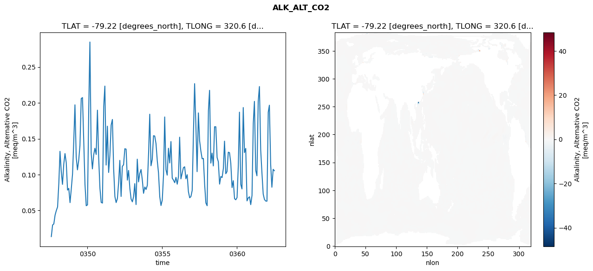
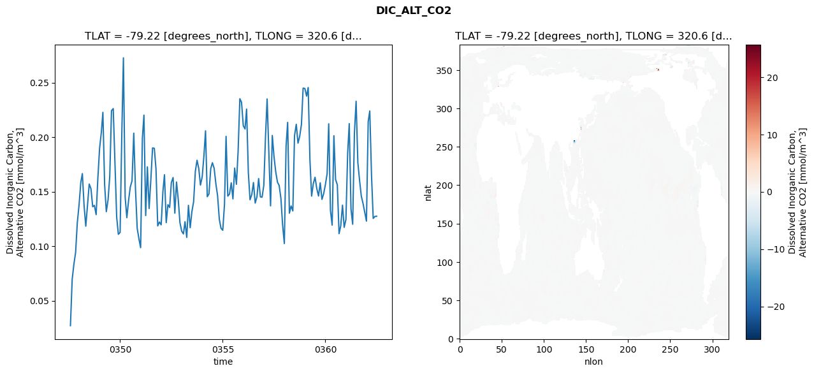
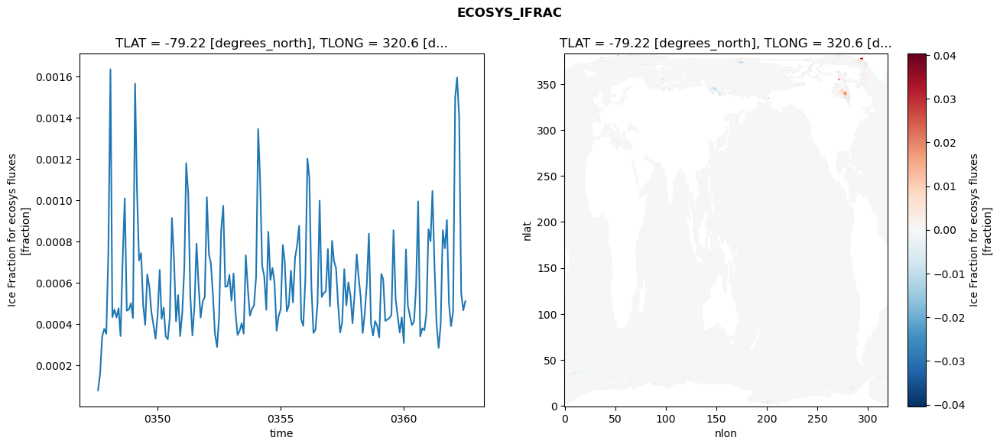
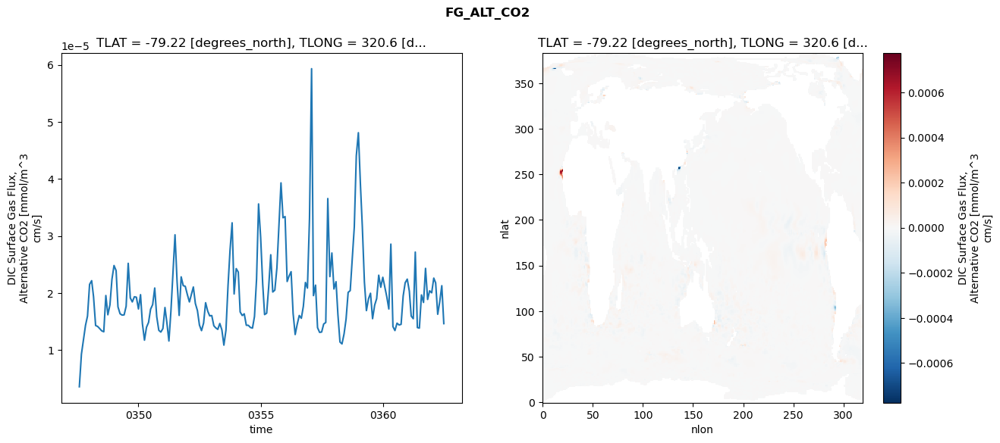

glb-dor_North_Atlantic_basin_029_1999-07-01_00118#
Simulation details#
Case: smyle.cdr-atlas-v0.glb-dor_North_Atlantic_basin_029_1999-07-01_00118.001
Basin: North_Atlantic_basin
Polygon: 29.0
Start date: 1999-07
Show code cell source Hide code cell source
import xarray as xr
import matplotlib.pyplot as plt
Show code cell source Hide code cell source
zarr_store = "/path/to/zarr/store"
# Parameters
zarr_store = "/global/cfs/projectdirs/m4746/Projects/Ocean-CDR-Atlas-v0/data/validation/smyle.cdr-atlas-v0.glb-dor_North_Atlantic_basin_029_1999-07-01_00118.001.validation.zarr"
Show code cell source Hide code cell source
%%time
ds_o = xr.open_zarr(zarr_store).compute()
ds_o
CPU times: user 611 ms, sys: 499 ms, total: 1.11 s
Wall time: 1.39 s
<xarray.Dataset> Size: 2MB
Dimensions: (nlat: 384, nlon: 320, time: 180)
Coordinates:
TLAT float64 8B -79.22
TLONG float64 8B 320.6
ULAT float64 8B -78.95
ULONG float64 8B 321.1
* time (time) object 1kB 0347-08-01 00:00:00 ... 0362-07-01 0...
z_t float32 4B 500.0
Dimensions without coordinates: nlat, nlon
Data variables:
ALK_ALT_CO2_diff (nlat, nlon) float32 492kB nan nan nan ... nan nan nan
ALK_ALT_CO2_rmse (time) float64 1kB 0.01369 0.02984 ... 0.1074 0.1055
DIC_ALT_CO2_diff (nlat, nlon) float32 492kB nan nan nan ... nan nan nan
DIC_ALT_CO2_rmse (time) float64 1kB 0.02717 0.06951 ... 0.1273 0.1275
ECOSYS_IFRAC_diff (nlat, nlon) float32 492kB nan nan nan ... nan nan nan
ECOSYS_IFRAC_rmse (time) float64 1kB 7.948e-05 0.0001614 ... 0.0005105
FG_ALT_CO2_diff (nlat, nlon) float32 492kB nan nan nan ... nan nan nan
FG_ALT_CO2_rmse (time) float64 1kB 3.568e-06 9.27e-06 ... 1.464e-05xarray.Dataset
- nlat: 384
- nlon: 320
- time: 180
- TLAT()float64-79.22
- long_name :
- array of t-grid latitudes
- units :
- degrees_north
array(-79.22052261)
- TLONG()float64320.6
- long_name :
- array of t-grid longitudes
- units :
- degrees_east
array(320.56250892)
- ULAT()float64-78.95
- long_name :
- array of u-grid latitudes
- units :
- degrees_north
array(-78.95289509)
- ULONG()float64321.1
- long_name :
- array of u-grid longitudes
- units :
- degrees_east
array(321.12500894)
- time(time)object0347-08-01 00:00:00 ... 0362-07-...
- bounds :
- time_bound
- long_name :
- time
array([cftime.DatetimeNoLeap(347, 8, 1, 0, 0, 0, 0, has_year_zero=True), cftime.DatetimeNoLeap(347, 9, 1, 0, 0, 0, 0, has_year_zero=True), cftime.DatetimeNoLeap(347, 10, 1, 0, 0, 0, 0, has_year_zero=True), cftime.DatetimeNoLeap(347, 11, 1, 0, 0, 0, 0, has_year_zero=True), cftime.DatetimeNoLeap(347, 12, 1, 0, 0, 0, 0, has_year_zero=True), cftime.DatetimeNoLeap(348, 1, 1, 0, 0, 0, 0, has_year_zero=True), cftime.DatetimeNoLeap(348, 2, 1, 0, 0, 0, 0, has_year_zero=True), cftime.DatetimeNoLeap(348, 3, 1, 0, 0, 0, 0, has_year_zero=True), cftime.DatetimeNoLeap(348, 4, 1, 0, 0, 0, 0, has_year_zero=True), cftime.DatetimeNoLeap(348, 5, 1, 0, 0, 0, 0, has_year_zero=True), cftime.DatetimeNoLeap(348, 6, 1, 0, 0, 0, 0, has_year_zero=True), cftime.DatetimeNoLeap(348, 7, 1, 0, 0, 0, 0, has_year_zero=True), cftime.DatetimeNoLeap(348, 8, 1, 0, 0, 0, 0, has_year_zero=True), cftime.DatetimeNoLeap(348, 9, 1, 0, 0, 0, 0, has_year_zero=True), cftime.DatetimeNoLeap(348, 10, 1, 0, 0, 0, 0, has_year_zero=True), cftime.DatetimeNoLeap(348, 11, 1, 0, 0, 0, 0, has_year_zero=True), cftime.DatetimeNoLeap(348, 12, 1, 0, 0, 0, 0, has_year_zero=True), cftime.DatetimeNoLeap(349, 1, 1, 0, 0, 0, 0, has_year_zero=True), cftime.DatetimeNoLeap(349, 2, 1, 0, 0, 0, 0, has_year_zero=True), cftime.DatetimeNoLeap(349, 3, 1, 0, 0, 0, 0, has_year_zero=True), cftime.DatetimeNoLeap(349, 4, 1, 0, 0, 0, 0, has_year_zero=True), cftime.DatetimeNoLeap(349, 5, 1, 0, 0, 0, 0, has_year_zero=True), cftime.DatetimeNoLeap(349, 6, 1, 0, 0, 0, 0, has_year_zero=True), cftime.DatetimeNoLeap(349, 7, 1, 0, 0, 0, 0, has_year_zero=True), cftime.DatetimeNoLeap(349, 8, 1, 0, 0, 0, 0, has_year_zero=True), cftime.DatetimeNoLeap(349, 9, 1, 0, 0, 0, 0, has_year_zero=True), cftime.DatetimeNoLeap(349, 10, 1, 0, 0, 0, 0, has_year_zero=True), cftime.DatetimeNoLeap(349, 11, 1, 0, 0, 0, 0, has_year_zero=True), cftime.DatetimeNoLeap(349, 12, 1, 0, 0, 0, 0, has_year_zero=True), cftime.DatetimeNoLeap(350, 1, 1, 0, 0, 0, 0, has_year_zero=True), cftime.DatetimeNoLeap(350, 2, 1, 0, 0, 0, 0, has_year_zero=True), cftime.DatetimeNoLeap(350, 3, 1, 0, 0, 0, 0, has_year_zero=True), cftime.DatetimeNoLeap(350, 4, 1, 0, 0, 0, 0, has_year_zero=True), cftime.DatetimeNoLeap(350, 5, 1, 0, 0, 0, 0, has_year_zero=True), cftime.DatetimeNoLeap(350, 6, 1, 0, 0, 0, 0, has_year_zero=True), cftime.DatetimeNoLeap(350, 7, 1, 0, 0, 0, 0, has_year_zero=True), cftime.DatetimeNoLeap(350, 8, 1, 0, 0, 0, 0, has_year_zero=True), cftime.DatetimeNoLeap(350, 9, 1, 0, 0, 0, 0, has_year_zero=True), cftime.DatetimeNoLeap(350, 10, 1, 0, 0, 0, 0, has_year_zero=True), cftime.DatetimeNoLeap(350, 11, 1, 0, 0, 0, 0, has_year_zero=True), cftime.DatetimeNoLeap(350, 12, 1, 0, 0, 0, 0, has_year_zero=True), cftime.DatetimeNoLeap(351, 1, 1, 0, 0, 0, 0, has_year_zero=True), cftime.DatetimeNoLeap(351, 2, 1, 0, 0, 0, 0, has_year_zero=True), cftime.DatetimeNoLeap(351, 3, 1, 0, 0, 0, 0, has_year_zero=True), cftime.DatetimeNoLeap(351, 4, 1, 0, 0, 0, 0, has_year_zero=True), cftime.DatetimeNoLeap(351, 5, 1, 0, 0, 0, 0, has_year_zero=True), cftime.DatetimeNoLeap(351, 6, 1, 0, 0, 0, 0, has_year_zero=True), cftime.DatetimeNoLeap(351, 7, 1, 0, 0, 0, 0, has_year_zero=True), cftime.DatetimeNoLeap(351, 8, 1, 0, 0, 0, 0, has_year_zero=True), cftime.DatetimeNoLeap(351, 9, 1, 0, 0, 0, 0, has_year_zero=True), cftime.DatetimeNoLeap(351, 10, 1, 0, 0, 0, 0, has_year_zero=True), cftime.DatetimeNoLeap(351, 11, 1, 0, 0, 0, 0, has_year_zero=True), cftime.DatetimeNoLeap(351, 12, 1, 0, 0, 0, 0, has_year_zero=True), cftime.DatetimeNoLeap(352, 1, 1, 0, 0, 0, 0, has_year_zero=True), cftime.DatetimeNoLeap(352, 2, 1, 0, 0, 0, 0, has_year_zero=True), cftime.DatetimeNoLeap(352, 3, 1, 0, 0, 0, 0, has_year_zero=True), cftime.DatetimeNoLeap(352, 4, 1, 0, 0, 0, 0, has_year_zero=True), cftime.DatetimeNoLeap(352, 5, 1, 0, 0, 0, 0, has_year_zero=True), cftime.DatetimeNoLeap(352, 6, 1, 0, 0, 0, 0, has_year_zero=True), cftime.DatetimeNoLeap(352, 7, 1, 0, 0, 0, 0, has_year_zero=True), cftime.DatetimeNoLeap(352, 8, 1, 0, 0, 0, 0, has_year_zero=True), cftime.DatetimeNoLeap(352, 9, 1, 0, 0, 0, 0, has_year_zero=True), cftime.DatetimeNoLeap(352, 10, 1, 0, 0, 0, 0, has_year_zero=True), cftime.DatetimeNoLeap(352, 11, 1, 0, 0, 0, 0, has_year_zero=True), cftime.DatetimeNoLeap(352, 12, 1, 0, 0, 0, 0, has_year_zero=True), cftime.DatetimeNoLeap(353, 1, 1, 0, 0, 0, 0, has_year_zero=True), cftime.DatetimeNoLeap(353, 2, 1, 0, 0, 0, 0, has_year_zero=True), cftime.DatetimeNoLeap(353, 3, 1, 0, 0, 0, 0, has_year_zero=True), cftime.DatetimeNoLeap(353, 4, 1, 0, 0, 0, 0, has_year_zero=True), cftime.DatetimeNoLeap(353, 5, 1, 0, 0, 0, 0, has_year_zero=True), cftime.DatetimeNoLeap(353, 6, 1, 0, 0, 0, 0, has_year_zero=True), cftime.DatetimeNoLeap(353, 7, 1, 0, 0, 0, 0, has_year_zero=True), cftime.DatetimeNoLeap(353, 8, 1, 0, 0, 0, 0, has_year_zero=True), cftime.DatetimeNoLeap(353, 9, 1, 0, 0, 0, 0, has_year_zero=True), cftime.DatetimeNoLeap(353, 10, 1, 0, 0, 0, 0, has_year_zero=True), cftime.DatetimeNoLeap(353, 11, 1, 0, 0, 0, 0, has_year_zero=True), cftime.DatetimeNoLeap(353, 12, 1, 0, 0, 0, 0, has_year_zero=True), cftime.DatetimeNoLeap(354, 1, 1, 0, 0, 0, 0, has_year_zero=True), cftime.DatetimeNoLeap(354, 2, 1, 0, 0, 0, 0, has_year_zero=True), cftime.DatetimeNoLeap(354, 3, 1, 0, 0, 0, 0, has_year_zero=True), cftime.DatetimeNoLeap(354, 4, 1, 0, 0, 0, 0, has_year_zero=True), cftime.DatetimeNoLeap(354, 5, 1, 0, 0, 0, 0, has_year_zero=True), cftime.DatetimeNoLeap(354, 6, 1, 0, 0, 0, 0, has_year_zero=True), cftime.DatetimeNoLeap(354, 7, 1, 0, 0, 0, 0, has_year_zero=True), cftime.DatetimeNoLeap(354, 8, 1, 0, 0, 0, 0, has_year_zero=True), cftime.DatetimeNoLeap(354, 9, 1, 0, 0, 0, 0, has_year_zero=True), cftime.DatetimeNoLeap(354, 10, 1, 0, 0, 0, 0, has_year_zero=True), cftime.DatetimeNoLeap(354, 11, 1, 0, 0, 0, 0, has_year_zero=True), cftime.DatetimeNoLeap(354, 12, 1, 0, 0, 0, 0, has_year_zero=True), cftime.DatetimeNoLeap(355, 1, 1, 0, 0, 0, 0, has_year_zero=True), cftime.DatetimeNoLeap(355, 2, 1, 0, 0, 0, 0, has_year_zero=True), cftime.DatetimeNoLeap(355, 3, 1, 0, 0, 0, 0, has_year_zero=True), cftime.DatetimeNoLeap(355, 4, 1, 0, 0, 0, 0, has_year_zero=True), cftime.DatetimeNoLeap(355, 5, 1, 0, 0, 0, 0, has_year_zero=True), cftime.DatetimeNoLeap(355, 6, 1, 0, 0, 0, 0, has_year_zero=True), cftime.DatetimeNoLeap(355, 7, 1, 0, 0, 0, 0, has_year_zero=True), cftime.DatetimeNoLeap(355, 8, 1, 0, 0, 0, 0, has_year_zero=True), cftime.DatetimeNoLeap(355, 9, 1, 0, 0, 0, 0, has_year_zero=True), cftime.DatetimeNoLeap(355, 10, 1, 0, 0, 0, 0, has_year_zero=True), cftime.DatetimeNoLeap(355, 11, 1, 0, 0, 0, 0, has_year_zero=True), cftime.DatetimeNoLeap(355, 12, 1, 0, 0, 0, 0, has_year_zero=True), cftime.DatetimeNoLeap(356, 1, 1, 0, 0, 0, 0, has_year_zero=True), cftime.DatetimeNoLeap(356, 2, 1, 0, 0, 0, 0, has_year_zero=True), cftime.DatetimeNoLeap(356, 3, 1, 0, 0, 0, 0, has_year_zero=True), cftime.DatetimeNoLeap(356, 4, 1, 0, 0, 0, 0, has_year_zero=True), cftime.DatetimeNoLeap(356, 5, 1, 0, 0, 0, 0, has_year_zero=True), cftime.DatetimeNoLeap(356, 6, 1, 0, 0, 0, 0, has_year_zero=True), cftime.DatetimeNoLeap(356, 7, 1, 0, 0, 0, 0, has_year_zero=True), cftime.DatetimeNoLeap(356, 8, 1, 0, 0, 0, 0, has_year_zero=True), cftime.DatetimeNoLeap(356, 9, 1, 0, 0, 0, 0, has_year_zero=True), cftime.DatetimeNoLeap(356, 10, 1, 0, 0, 0, 0, has_year_zero=True), cftime.DatetimeNoLeap(356, 11, 1, 0, 0, 0, 0, has_year_zero=True), cftime.DatetimeNoLeap(356, 12, 1, 0, 0, 0, 0, has_year_zero=True), cftime.DatetimeNoLeap(357, 1, 1, 0, 0, 0, 0, has_year_zero=True), cftime.DatetimeNoLeap(357, 2, 1, 0, 0, 0, 0, has_year_zero=True), cftime.DatetimeNoLeap(357, 3, 1, 0, 0, 0, 0, has_year_zero=True), cftime.DatetimeNoLeap(357, 4, 1, 0, 0, 0, 0, has_year_zero=True), cftime.DatetimeNoLeap(357, 5, 1, 0, 0, 0, 0, has_year_zero=True), cftime.DatetimeNoLeap(357, 6, 1, 0, 0, 0, 0, has_year_zero=True), cftime.DatetimeNoLeap(357, 7, 1, 0, 0, 0, 0, has_year_zero=True), cftime.DatetimeNoLeap(357, 8, 1, 0, 0, 0, 0, has_year_zero=True), cftime.DatetimeNoLeap(357, 9, 1, 0, 0, 0, 0, has_year_zero=True), cftime.DatetimeNoLeap(357, 10, 1, 0, 0, 0, 0, has_year_zero=True), cftime.DatetimeNoLeap(357, 11, 1, 0, 0, 0, 0, has_year_zero=True), cftime.DatetimeNoLeap(357, 12, 1, 0, 0, 0, 0, has_year_zero=True), cftime.DatetimeNoLeap(358, 1, 1, 0, 0, 0, 0, has_year_zero=True), cftime.DatetimeNoLeap(358, 2, 1, 0, 0, 0, 0, has_year_zero=True), cftime.DatetimeNoLeap(358, 3, 1, 0, 0, 0, 0, has_year_zero=True), cftime.DatetimeNoLeap(358, 4, 1, 0, 0, 0, 0, has_year_zero=True), cftime.DatetimeNoLeap(358, 5, 1, 0, 0, 0, 0, has_year_zero=True), cftime.DatetimeNoLeap(358, 6, 1, 0, 0, 0, 0, has_year_zero=True), cftime.DatetimeNoLeap(358, 7, 1, 0, 0, 0, 0, has_year_zero=True), cftime.DatetimeNoLeap(358, 8, 1, 0, 0, 0, 0, has_year_zero=True), cftime.DatetimeNoLeap(358, 9, 1, 0, 0, 0, 0, has_year_zero=True), cftime.DatetimeNoLeap(358, 10, 1, 0, 0, 0, 0, has_year_zero=True), cftime.DatetimeNoLeap(358, 11, 1, 0, 0, 0, 0, has_year_zero=True), cftime.DatetimeNoLeap(358, 12, 1, 0, 0, 0, 0, has_year_zero=True), cftime.DatetimeNoLeap(359, 1, 1, 0, 0, 0, 0, has_year_zero=True), cftime.DatetimeNoLeap(359, 2, 1, 0, 0, 0, 0, has_year_zero=True), cftime.DatetimeNoLeap(359, 3, 1, 0, 0, 0, 0, has_year_zero=True), cftime.DatetimeNoLeap(359, 4, 1, 0, 0, 0, 0, has_year_zero=True), cftime.DatetimeNoLeap(359, 5, 1, 0, 0, 0, 0, has_year_zero=True), cftime.DatetimeNoLeap(359, 6, 1, 0, 0, 0, 0, has_year_zero=True), cftime.DatetimeNoLeap(359, 7, 1, 0, 0, 0, 0, has_year_zero=True), cftime.DatetimeNoLeap(359, 8, 1, 0, 0, 0, 0, has_year_zero=True), cftime.DatetimeNoLeap(359, 9, 1, 0, 0, 0, 0, has_year_zero=True), cftime.DatetimeNoLeap(359, 10, 1, 0, 0, 0, 0, has_year_zero=True), cftime.DatetimeNoLeap(359, 11, 1, 0, 0, 0, 0, has_year_zero=True), cftime.DatetimeNoLeap(359, 12, 1, 0, 0, 0, 0, has_year_zero=True), cftime.DatetimeNoLeap(360, 1, 1, 0, 0, 0, 0, has_year_zero=True), cftime.DatetimeNoLeap(360, 2, 1, 0, 0, 0, 0, has_year_zero=True), cftime.DatetimeNoLeap(360, 3, 1, 0, 0, 0, 0, has_year_zero=True), cftime.DatetimeNoLeap(360, 4, 1, 0, 0, 0, 0, has_year_zero=True), cftime.DatetimeNoLeap(360, 5, 1, 0, 0, 0, 0, has_year_zero=True), cftime.DatetimeNoLeap(360, 6, 1, 0, 0, 0, 0, has_year_zero=True), cftime.DatetimeNoLeap(360, 7, 1, 0, 0, 0, 0, has_year_zero=True), cftime.DatetimeNoLeap(360, 8, 1, 0, 0, 0, 0, has_year_zero=True), cftime.DatetimeNoLeap(360, 9, 1, 0, 0, 0, 0, has_year_zero=True), cftime.DatetimeNoLeap(360, 10, 1, 0, 0, 0, 0, has_year_zero=True), cftime.DatetimeNoLeap(360, 11, 1, 0, 0, 0, 0, has_year_zero=True), cftime.DatetimeNoLeap(360, 12, 1, 0, 0, 0, 0, has_year_zero=True), cftime.DatetimeNoLeap(361, 1, 1, 0, 0, 0, 0, has_year_zero=True), cftime.DatetimeNoLeap(361, 2, 1, 0, 0, 0, 0, has_year_zero=True), cftime.DatetimeNoLeap(361, 3, 1, 0, 0, 0, 0, has_year_zero=True), cftime.DatetimeNoLeap(361, 4, 1, 0, 0, 0, 0, has_year_zero=True), cftime.DatetimeNoLeap(361, 5, 1, 0, 0, 0, 0, has_year_zero=True), cftime.DatetimeNoLeap(361, 6, 1, 0, 0, 0, 0, has_year_zero=True), cftime.DatetimeNoLeap(361, 7, 1, 0, 0, 0, 0, has_year_zero=True), cftime.DatetimeNoLeap(361, 8, 1, 0, 0, 0, 0, has_year_zero=True), cftime.DatetimeNoLeap(361, 9, 1, 0, 0, 0, 0, has_year_zero=True), cftime.DatetimeNoLeap(361, 10, 1, 0, 0, 0, 0, has_year_zero=True), cftime.DatetimeNoLeap(361, 11, 1, 0, 0, 0, 0, has_year_zero=True), cftime.DatetimeNoLeap(361, 12, 1, 0, 0, 0, 0, has_year_zero=True), cftime.DatetimeNoLeap(362, 1, 1, 0, 0, 0, 0, has_year_zero=True), cftime.DatetimeNoLeap(362, 2, 1, 0, 0, 0, 0, has_year_zero=True), cftime.DatetimeNoLeap(362, 3, 1, 0, 0, 0, 0, has_year_zero=True), cftime.DatetimeNoLeap(362, 4, 1, 0, 0, 0, 0, has_year_zero=True), cftime.DatetimeNoLeap(362, 5, 1, 0, 0, 0, 0, has_year_zero=True), cftime.DatetimeNoLeap(362, 6, 1, 0, 0, 0, 0, has_year_zero=True), cftime.DatetimeNoLeap(362, 7, 1, 0, 0, 0, 0, has_year_zero=True)], dtype=object) - z_t()float32500.0
- long_name :
- depth from surface to midpoint of layer
- positive :
- down
- units :
- centimeters
- valid_max :
- 537500.0
- valid_min :
- 500.0
array(500., dtype=float32)
- ALK_ALT_CO2_diff(nlat, nlon)float32nan nan nan nan ... nan nan nan nan
- cell_methods :
- time: mean
- grid_loc :
- 3111
- long_name :
- Alkalinity, Alternative CO2
- units :
- meq/m^3
array([[ nan, nan, nan, ..., nan, nan, nan], [ nan, nan, nan, ..., nan, nan, nan], [0.00732422, 0.00366211, 0.01757812, ..., nan, nan, nan], ..., [ nan, nan, nan, ..., nan, nan, nan], [ nan, nan, nan, ..., nan, nan, nan], [ nan, nan, nan, ..., nan, nan, nan]], dtype=float32) - ALK_ALT_CO2_rmse(time)float640.01369 0.02984 ... 0.1074 0.1055
- cell_methods :
- time: mean
- grid_loc :
- 3111
- long_name :
- Alkalinity, Alternative CO2
- units :
- meq/m^3
array([0.01369469, 0.02984189, 0.03131782, 0.04365527, 0.04994583, 0.05505833, 0.08874396, 0.13252976, 0.10410119, 0.08646302, 0.11473012, 0.12938363, 0.11658289, 0.07848252, 0.08089659, 0.06104846, 0.07983029, 0.10086734, 0.14865689, 0.19729353, 0.12433574, 0.10670572, 0.12015766, 0.14069681, 0.20603096, 0.20738268, 0.14805922, 0.08609946, 0.05670646, 0.05789548, 0.19233939, 0.28481655, 0.13010822, 0.10805033, 0.12754648, 0.13679789, 0.12811144, 0.1898743 , 0.12309657, 0.0807511 , 0.06135985, 0.06039048, 0.19531307, 0.22341541, 0.11338199, 0.16754466, 0.10305126, 0.12657941, 0.16906291, 0.17691728, 0.10847073, 0.06934392, 0.06109635, 0.06671797, 0.09031388, 0.11989612, 0.06962914, 0.11149067, 0.11380245, 0.13612544, 0.13558553, 0.09237693, 0.10588781, 0.08079387, 0.06606132, 0.06212756, 0.06977148, 0.08750399, 0.05832964, 0.12156965, 0.08995014, 0.10158954, 0.10717191, 0.09261851, 0.07401544, 0.08280408, 0.0793467 , 0.08505697, 0.13004385, 0.18421492, 0.11241453, 0.12101949, 0.15427029, 0.15381178, 0.14327123, 0.11958977, 0.10238822, 0.06908125, 0.05698349, 0.06464756, 0.10005447, 0.18039501, 0.10698611, 0.09933212, 0.13678771, 0.11632207, 0.14616433, 0.09513821, 0.09242561, 0.08879557, 0.09626801, 0.08671195, 0.09788829, 0.15221112, 0.09415699, 0.10184054, 0.1097495 , 0.11093466, 0.09430038, 0.09996 , 0.07620737, 0.06778871, 0.06942533, 0.07796439, 0.15797104, 0.22681717, 0.16951543, 0.10420202, 0.18606183, 0.14741947, 0.13296875, 0.12211373, 0.12269826, 0.08627386, 0.06058821, 0.05669242, 0.18952078, 0.21752943, 0.11609553, 0.13003581, 0.11217266, 0.16675295, 0.16675084, 0.12389112, 0.11801376, 0.08681808, 0.09740061, 0.09601342, 0.10872778, 0.1466903 , 0.1012939 , 0.10424883, 0.13129196, 0.13065098, 0.11608964, 0.08200432, 0.09160523, 0.06653056, 0.06499488, 0.06809429, 0.11311925, 0.18707934, 0.08651993, 0.08012788, 0.19352422, 0.13077083, 0.13652012, 0.06344551, 0.06756317, 0.06920318, 0.05823729, 0.07105049, 0.1717602 , 0.20214006, 0.1061036 , 0.09841849, 0.20190389, 0.2227833 , 0.13466532, 0.10185485, 0.07304742, 0.06542913, 0.06325187, 0.0630326 , 0.18709105, 0.19677427, 0.11478219, 0.08250066, 0.10742981, 0.10549474]) - DIC_ALT_CO2_diff(nlat, nlon)float32nan nan nan nan ... nan nan nan nan
- cell_methods :
- time: mean
- grid_loc :
- 3111
- long_name :
- Dissolved Inorganic Carbon, Alternative CO2
- units :
- mmol/m^3
array([[ nan, nan, nan, ..., nan, nan, nan], [ nan, nan, nan, ..., nan, nan, nan], [0.01025391, 0.00830078, 0.01391602, ..., nan, nan, nan], ..., [ nan, nan, nan, ..., nan, nan, nan], [ nan, nan, nan, ..., nan, nan, nan], [ nan, nan, nan, ..., nan, nan, nan]], dtype=float32) - DIC_ALT_CO2_rmse(time)float640.02717 0.06951 ... 0.1273 0.1275
- cell_methods :
- time: mean
- grid_loc :
- 3111
- long_name :
- Dissolved Inorganic Carbon, Alternative CO2
- units :
- mmol/m^3
array([0.02716893, 0.06950947, 0.08329644, 0.09432097, 0.12146989, 0.13771085, 0.15828819, 0.16656429, 0.13693384, 0.11840107, 0.13824157, 0.15705223, 0.15268278, 0.136248 , 0.13741334, 0.12897043, 0.16179739, 0.18953233, 0.20438641, 0.22276484, 0.1562542 , 0.13170148, 0.14257989, 0.16389059, 0.22428938, 0.22619995, 0.17809143, 0.1268502 , 0.11095334, 0.11266136, 0.2045438 , 0.27275204, 0.14482225, 0.12617566, 0.14197582, 0.15431273, 0.15994295, 0.20368319, 0.15313197, 0.11644458, 0.10707491, 0.09870309, 0.19899018, 0.22023049, 0.12812687, 0.17277903, 0.13457508, 0.16046168, 0.19010947, 0.18983197, 0.17095198, 0.11865178, 0.12219161, 0.11963608, 0.15007239, 0.16557191, 0.12166569, 0.13808067, 0.1355413 , 0.15828788, 0.16298685, 0.13028391, 0.15889054, 0.14279081, 0.12164132, 0.11376633, 0.11129577, 0.12250107, 0.10810085, 0.13748605, 0.1169855 , 0.13157441, 0.14082229, 0.16876522, 0.17886774, 0.17115279, 0.15605499, 0.16379671, 0.18352728, 0.20581662, 0.14539935, 0.14801797, 0.17101475, 0.17660058, 0.17146746, 0.15715435, 0.14646529, 0.1247318 , 0.11644685, 0.11463577, 0.138252 , 0.20074879, 0.14593346, 0.1478572 , 0.15812215, 0.14340366, 0.17164095, 0.15676165, 0.18700947, 0.23525615, 0.23199828, 0.21056214, 0.207532 , 0.22576844, 0.16751315, 0.14261151, 0.1473069 , 0.1584014 , 0.13955273, 0.14535064, 0.1620324 , 0.14525782, 0.14495716, 0.15580828, 0.20157279, 0.23503594, 0.18489361, 0.13702364, 0.20155719, 0.18245546, 0.16814097, 0.15871865, 0.15573599, 0.14389264, 0.11967919, 0.10245681, 0.19184684, 0.21355997, 0.13028841, 0.13690669, 0.13235533, 0.20128747, 0.21178836, 0.19453582, 0.20075049, 0.21163328, 0.24499498, 0.24462516, 0.23764835, 0.2455383 , 0.17911778, 0.14598068, 0.15769978, 0.16321842, 0.15287246, 0.14602362, 0.15815262, 0.1429529 , 0.14812851, 0.15650787, 0.16665156, 0.21225209, 0.13273873, 0.11933293, 0.20131184, 0.16112939, 0.15634296, 0.11153304, 0.11876233, 0.13761132, 0.11733654, 0.12450032, 0.18538845, 0.21241618, 0.13415022, 0.12016979, 0.20363091, 0.23294363, 0.17668881, 0.1602074 , 0.14602717, 0.13923222, 0.13120253, 0.12301527, 0.21433406, 0.22403972, 0.16501002, 0.12547932, 0.12731237, 0.12748704]) - ECOSYS_IFRAC_diff(nlat, nlon)float32nan nan nan nan ... nan nan nan nan
- cell_methods :
- time: mean
- grid_loc :
- 2110
- long_name :
- Ice Fraction for ecosys fluxes
- units :
- fraction
array([[ nan, nan, nan, ..., nan, nan, nan], [ nan, nan, nan, ..., nan, nan, nan], [ 1.0728836e-05, -2.7298927e-05, 1.2516975e-05, ..., nan, nan, nan], ..., [ nan, nan, nan, ..., nan, nan, nan], [ nan, nan, nan, ..., nan, nan, nan], [ nan, nan, nan, ..., nan, nan, nan]], dtype=float32) - ECOSYS_IFRAC_rmse(time)float647.948e-05 0.0001614 ... 0.0005105
- cell_methods :
- time: mean
- grid_loc :
- 2110
- long_name :
- Ice Fraction for ecosys fluxes
- units :
- fraction
array([7.94824924e-05, 1.61435716e-04, 3.39466184e-04, 3.76820215e-04, 3.53303648e-04, 7.48037542e-04, 1.63349850e-03, 4.33421677e-04, 4.70798839e-04, 4.31590592e-04, 4.76406907e-04, 3.42273048e-04, 7.16125264e-04, 1.00881678e-03, 4.64826881e-04, 4.70069068e-04, 5.00794769e-04, 4.29347478e-04, 1.56433153e-03, 1.04909703e-03, 7.07664997e-04, 7.43759643e-04, 4.91946705e-04, 3.96060804e-04, 6.40206070e-04, 5.79150961e-04, 4.56969302e-04, 3.94523458e-04, 3.28911344e-04, 4.41826306e-04, 6.62077554e-04, 4.24964301e-04, 4.79368016e-04, 3.40649874e-04, 3.26353584e-04, 4.32351619e-04, 9.13599461e-04, 7.15504352e-04, 4.12811963e-04, 5.40072656e-04, 3.41552468e-04, 4.51577506e-04, 6.73931854e-04, 1.17864163e-03, 1.02189147e-03, 5.34069411e-04, 3.44932540e-04, 4.84339677e-04, 7.89532398e-04, 5.83748831e-04, 4.31527973e-04, 5.09855329e-04, 5.31047080e-04, 1.01413960e-03, 7.36069847e-04, 6.95774784e-04, 5.41223679e-04, 3.52609128e-04, 2.88712954e-04, 4.33874065e-04, 8.54144509e-04, 9.72988781e-04, 5.80542925e-04, 5.82338430e-04, 6.38305079e-04, 5.12404169e-04, 6.44891161e-04, 4.57285055e-04, 3.47179109e-04, 3.66035333e-04, 4.04021426e-04, 3.53671885e-04, 7.32514516e-04, 5.70389612e-04, 4.40604835e-04, 4.74167362e-04, 4.89725742e-04, 6.30553804e-04, 1.34473485e-03, 1.10018991e-03, ... 3.91394736e-04, 6.16700447e-04, 1.20037285e-03, 1.10943710e-03, 5.78928172e-04, 3.56724707e-04, 3.73808775e-04, 5.04683034e-04, 9.97883821e-04, 5.30909415e-04, 5.50106953e-04, 5.59106965e-04, 7.62679672e-04, 4.86049536e-04, 8.02846415e-04, 7.06489878e-04, 6.69884273e-04, 4.96217966e-04, 3.59203265e-04, 4.08067178e-04, 6.65667433e-04, 4.89880714e-04, 6.01644549e-04, 5.37596403e-04, 4.04036177e-04, 5.46685157e-04, 7.37734878e-04, 6.29908854e-04, 5.30908670e-04, 3.56426335e-04, 4.54315551e-04, 5.94292224e-04, 8.37987343e-04, 4.04521248e-04, 3.44247437e-04, 4.14263377e-04, 3.92234957e-04, 3.35818581e-04, 6.42845283e-04, 6.16209593e-04, 4.15459260e-04, 4.22240506e-04, 4.29111649e-04, 4.43902446e-04, 8.54306807e-04, 5.21841199e-04, 4.39455326e-04, 3.58968527e-04, 4.32001658e-04, 3.08139849e-04, 7.61043224e-04, 4.90944703e-04, 4.39454055e-04, 3.95083330e-04, 4.12652538e-04, 5.79408988e-04, 9.93986733e-04, 3.40747596e-04, 3.79038164e-04, 3.70350052e-04, 4.49705795e-04, 8.59192062e-04, 8.01320531e-04, 1.04419838e-03, 6.73935000e-04, 3.99886870e-04, 2.84948594e-04, 3.97972896e-04, 8.54672150e-04, 7.66952140e-04, 9.03867561e-04, 4.99342037e-04, 3.89846724e-04, 4.59187143e-04, 1.49768456e-03, 1.59317671e-03, 1.40463111e-03, 5.49361445e-04, 4.66502083e-04, 5.10506724e-04]) - FG_ALT_CO2_diff(nlat, nlon)float32nan nan nan nan ... nan nan nan nan
- cell_methods :
- time: mean
- grid_loc :
- 2110
- long_name :
- DIC Surface Gas Flux, Alternative CO2
- units :
- mmol/m^3 cm/s
array([[ nan, nan, nan, ..., nan, nan, nan], [ nan, nan, nan, ..., nan, nan, nan], [-1.0051963e-08, -1.5849537e-08, -4.0823878e-10, ..., nan, nan, nan], ..., [ nan, nan, nan, ..., nan, nan, nan], [ nan, nan, nan, ..., nan, nan, nan], [ nan, nan, nan, ..., nan, nan, nan]], dtype=float32) - FG_ALT_CO2_rmse(time)float643.568e-06 9.27e-06 ... 1.464e-05
- cell_methods :
- time: mean
- grid_loc :
- 2110
- long_name :
- DIC Surface Gas Flux, Alternative CO2
- units :
- mmol/m^3 cm/s
array([3.56836231e-06, 9.27006477e-06, 1.17825740e-05, 1.43280500e-05, 1.59550797e-05, 2.15148294e-05, 2.21642256e-05, 1.93656727e-05, 1.43051618e-05, 1.41423813e-05, 1.37648504e-05, 1.33712984e-05, 1.32070505e-05, 1.95600966e-05, 1.61860359e-05, 1.79298187e-05, 2.24022110e-05, 2.48223995e-05, 2.39364701e-05, 1.75774071e-05, 1.63701857e-05, 1.61304161e-05, 1.61696037e-05, 1.76746708e-05, 2.52048185e-05, 1.91386085e-05, 1.84391089e-05, 1.93426609e-05, 1.92634914e-05, 1.72053074e-05, 1.97114924e-05, 1.46174130e-05, 1.17372990e-05, 1.39974063e-05, 1.48514441e-05, 1.71576415e-05, 1.79562526e-05, 2.08766036e-05, 1.58459763e-05, 1.34646856e-05, 1.31531056e-05, 1.37674734e-05, 1.74584792e-05, 1.48555113e-05, 1.15892904e-05, 1.68371256e-05, 2.37383032e-05, 3.02064975e-05, 2.19855655e-05, 1.60758519e-05, 2.28290288e-05, 2.12930612e-05, 2.11737516e-05, 1.97430881e-05, 1.84361166e-05, 1.96801680e-05, 2.10565737e-05, 1.81648774e-05, 1.69135116e-05, 1.43826120e-05, 1.34057858e-05, 1.47439190e-05, 1.83007810e-05, 1.68384818e-05, 1.59977687e-05, 1.60465360e-05, 1.42598187e-05, 1.38947806e-05, 1.36293677e-05, 1.46571282e-05, 1.35383751e-05, 1.08664163e-05, 1.34834393e-05, 2.13288973e-05, 2.75294306e-05, 3.23042515e-05, 1.98337276e-05, 2.42812539e-05, 2.36716416e-05, 1.66860368e-05, ... 3.31990349e-05, 3.33996131e-05, 2.20167893e-05, 2.29439844e-05, 2.37399983e-05, 1.64207384e-05, 1.27268221e-05, 1.45041742e-05, 1.60600308e-05, 1.55724175e-05, 1.76735728e-05, 2.18511553e-05, 2.08635121e-05, 3.31392332e-05, 5.93221607e-05, 1.95499545e-05, 2.13785640e-05, 1.39306702e-05, 1.30981602e-05, 1.31633901e-05, 1.45726866e-05, 1.48334517e-05, 3.65596877e-05, 2.28796115e-05, 2.70162253e-05, 2.07139172e-05, 2.19810143e-05, 1.62643048e-05, 1.14110462e-05, 1.10786693e-05, 1.28282743e-05, 1.54236254e-05, 2.01121947e-05, 2.04199183e-05, 2.58671745e-05, 3.15869360e-05, 4.40671710e-05, 4.81028407e-05, 3.88794331e-05, 3.16082940e-05, 2.19216960e-05, 1.69202673e-05, 1.89987922e-05, 1.99610215e-05, 1.55032106e-05, 1.78713230e-05, 1.90149932e-05, 2.31200858e-05, 2.10090507e-05, 2.27603949e-05, 2.10104315e-05, 1.93644857e-05, 1.72030724e-05, 2.85706828e-05, 1.41147846e-05, 1.34180456e-05, 1.47092442e-05, 1.43986523e-05, 1.45086330e-05, 1.94800524e-05, 2.18019031e-05, 2.24360274e-05, 2.03226373e-05, 1.59591346e-05, 1.54946737e-05, 2.71743742e-05, 1.39427145e-05, 1.38473567e-05, 1.96607843e-05, 1.83477681e-05, 2.43227752e-05, 1.88713148e-05, 2.03824554e-05, 2.00427808e-05, 2.26146831e-05, 2.17844125e-05, 1.62770908e-05, 1.84651930e-05, 2.12822669e-05, 1.46353676e-05])
- timePandasIndex
PandasIndex(CFTimeIndex([0347-08-01 00:00:00, 0347-09-01 00:00:00, 0347-10-01 00:00:00, 0347-11-01 00:00:00, 0347-12-01 00:00:00, 0348-01-01 00:00:00, 0348-02-01 00:00:00, 0348-03-01 00:00:00, 0348-04-01 00:00:00, 0348-05-01 00:00:00, ... 0361-10-01 00:00:00, 0361-11-01 00:00:00, 0361-12-01 00:00:00, 0362-01-01 00:00:00, 0362-02-01 00:00:00, 0362-03-01 00:00:00, 0362-04-01 00:00:00, 0362-05-01 00:00:00, 0362-06-01 00:00:00, 0362-07-01 00:00:00], dtype='object', length=180, calendar='noleap', freq='MS'))
Show code cell source Hide code cell source
variables = [v[:-5] for v in ds_o.variables if "_rmse" in v]
Show code cell source Hide code cell source
plt.rcParams.update({'figure.max_open_warning': 0})
for v in variables:
fig, axs = plt.subplots(1, 2, figsize=(15, 6))
ds_o[f"{v}_rmse"].plot(ax=axs[0])
ds_o[f"{v}_diff"].plot(ax=axs[1])
plt.suptitle(v, fontweight="bold")



